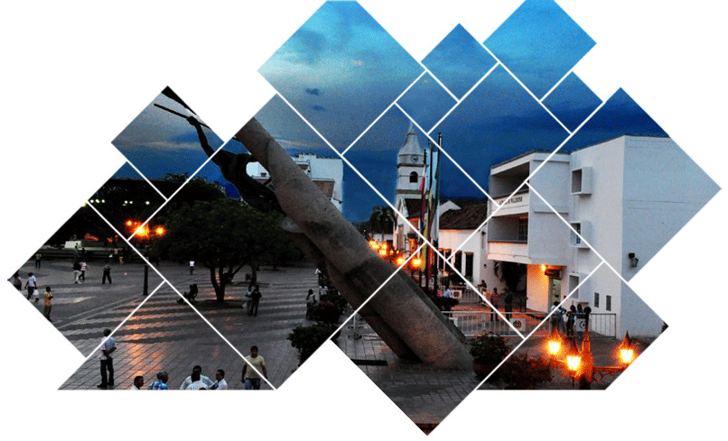

- 

|
El Curador Urbano es un particular encargado de estudiar, tramitar y expedir licencias urbanísticas a petición del interesado en adelantar proyectos de esta índole. Debe verificar y comprobar que los proyectos sometidos a su consideración, cumplan con las normas urbanísticas y de sismo resistencia vigente, solamente cuando la solicitud se ajuste a dichas normas se expedirá la correspondiente licencia. Funciones del Curador Urbano Los Curadores Urbanos se crearon para agilizar los procedimientos de solicitud y expedición de licencias urbanísticas y descongestionar las oficinas de planeación y ejercen su función dentro de la totalidad del territorio municipal o distrital, o dentro de las zonas o áreas del municipio o distrito que le hayan sido asignadas. ARYANNA ZULETA OÑATE CURADOR URBANO N° 2 DE VALLEDUPAR Arquitecta con amplia experiencia en la interpretación de normas urbanísticas para el estudio de proyectos. Sólidos conocimientos de principios de Urbanismo y Planificación. Excelente capacidad de negociación, toma de decisiones y trabajo en equipo. Egresada de la Facultad de Arquitectura de la Universidad Autónoma del Caribe, Especialista en Derecho Ambiental, Territorial y Urbanístico y Magister en Derecho Ambiental y Urbano Territorial de la Universidad del Norte. |
| Dirección: Calle 16 No. 6 - 90 | Teléfono: 5888428 | E-mail: curadurianumero2@hotmail.es 2014 © Copyright. CURADURIA URBANA No.2 DE VALLEDUPAR. |